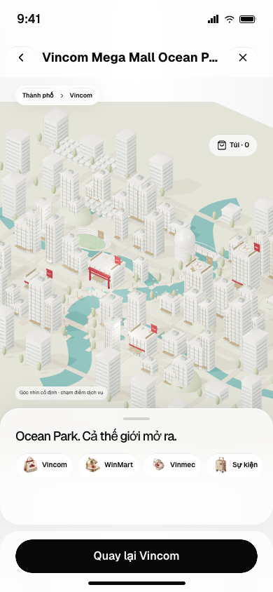
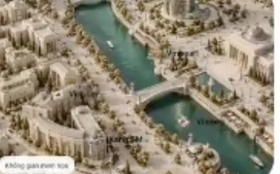
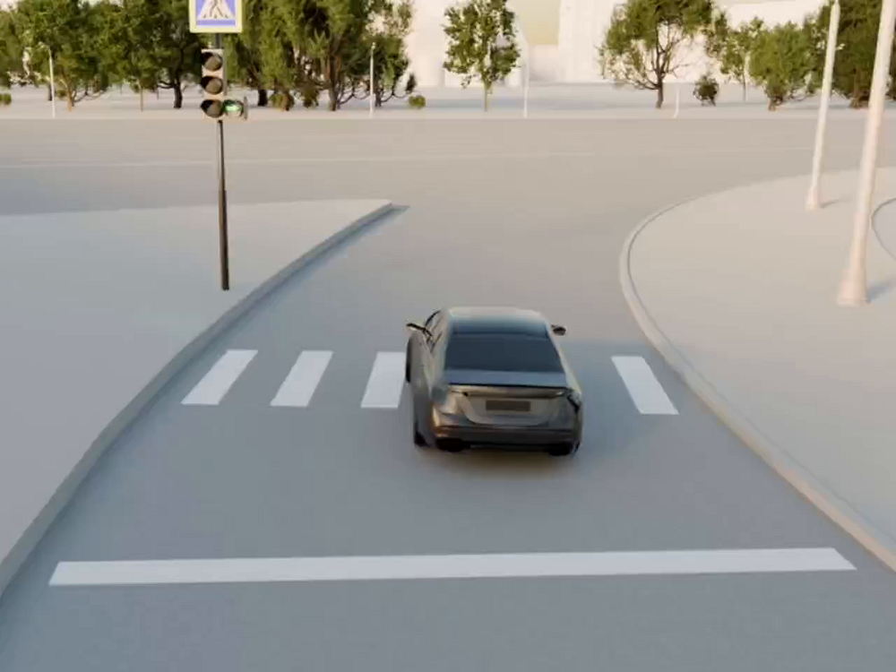
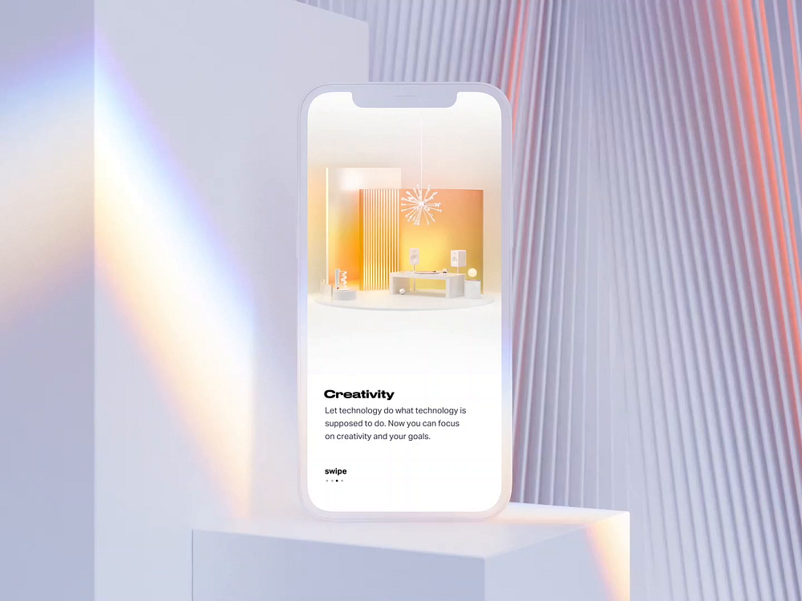

VINCLUB / RESEARCH / 02.10.2026 / CHƯA CHỈNH MODEL
Chi tiết kiến trúc và vật liệu phải tạo được chiều sâu.
Đề xuất: thành phố kiến trúc thật thu nhỏ, nền stone sáng và nước jade có chiều sâu. Pearl, champagne và ruby từ icon dùng tập trung ở Vincom và các điểm dịch vụ.
1. Vì sao bản hiện tại chưa đạt

315 mesh · 13 material · 0 texture
Kiểm tra GLB thực tế: không có normal map, roughness map hay baked AO. Có nhiều chi tiết hình học nhưng bề mặt vẫn là màu đồng nhất.
- Cửa sổ lặp như sọc màu; thiếu hốc sâu, panel và nội thất nhìn xuyên sảnh.
- Nhà, đất và đường có độ sáng gần nhau, cảnh mất tầng trước–sau.
- Cây lặp hình ellipsoid; mặt nước phẳng và màu đều.
- Blender đang dùng AgX, web dùng ACES. Cần kiểm soát cùng ánh sáng và camera trước khi kết luận palette sai do pipeline.
- Icon có gold/ruby bóng, nhưng phủ cùng cách đó lên cả đô thị làm mất tự nhiên.
Đọc từ screenshot: chi tiết nhỏ chưa tạo khác biệt rõ ở 390px. Ưu tiên silhouette, bóng tiếp xúc và điểm dịch vụ trước khi thêm micro-detail.
2. Reference và phần nên học

Ảnh mày gửi
Khối kiến trúc sáng nhưng có bóng sâu; nước đậm hơn nền, bờ sông và phố tạo nhiều lớp. Ảnh nhỏ nên chỉ dùng để đọc bố cục và tương phản.
Reference do người dùng cung cấp
Chipsa — Donstroy
Studio dùng nhà clay trung tính cho nền, vật liệu đầy đủ ở khu chính. Học hierarchy và chi tiết đường phố; đây là video render, không phải bằng chứng chạy realtime trên mobile.
Nguồn gốc ↗
Gleb — Smart Home
Quan sát: vật thể sáng có cạnh, khe và phản xạ rõ; một vùng màu ấm làm focal point. Mượn cách phân biệt vật liệu, không bê palette lavender vào VinClub.
Nguồn gốc ↗Pravda24 / Three.js ↗: tham khảo nhận diện từng khu và nội dung tương tác. Giữ camera cố định theo yêu cầu hiện tại; không áp dụng free orbit của reference.
3. Hướng vật liệu đề xuất
Các màu và thông số dưới đây là điểm bắt đầu do tao đề xuất, cần thử dưới ánh sáng cố định. Chưa phải palette đã duyệt. Không lấy màu HEX làm bằng chứng vật liệu thật.
4. Chi tiết cần thay, không chỉ thêm
Khối đô thị6–8 kiểu nhà khác nhau: stepped tower, curved podium, courtyard, villa, glass office. Phân cụm quanh sông; landmark có silhouette riêng. Các Vincom trong demo chưa được coi là mô hình địa lý chính xác.
LandmarkVincom: atrium, cửa kính có hốc, mái sảnh, storefront sâu và đèn nội thất. Vinmec: canopy drop-off, glazing sạch. WinMart: retail frontage và loading bay. Tạo khác biệt chức năng bằng hình khối.
Không gian sốngBờ kè, lối đi ven sông, bậc xuống nước, cầu có trụ, planter, ghế, streetlight. Cây nhiều tán thay ellipsoid. Các hốc và chân nhà có baked contact shadow.
5. Cách làm tiếp sau research
- Dựng một góc mẫu gồm Vincom + 2 nhà nền + sông + cây. Chưa dựng lại toàn thành phố.
- Render cùng góc đó trong Blender và Three.js ở 390×844; kiểm tra palette, reflection, AO và độ đọc ở màn hình thật.
- So sánh 3 treatment: limestone + jade (đề xuất), porcelain + champagne, warm stone + bronze. Chọn treatment rồi mới mở rộng đô thị.
Tiêu chí: thấy rõ cửa kính và chiều sâu ở 390px; nước tách nền; kim loại chỉ tạo điểm nhấn; Vincom nổi hơn nhà nền; bản dark giữ chi tiết; screenshot WebGL phải là căn cứ duyệt.
Nguồn kỹ thuật
Khronos PBR: roughness, normal, AO và transmission ↗
Three.js color management ↗
Blender: export PBR và baked AO/normal ↗
Hình tham khảo giữ credit tác giả, chỉ phục vụ research. Không phải render kết quả mới. App và camera chưa bị thay đổi trong lượt này.